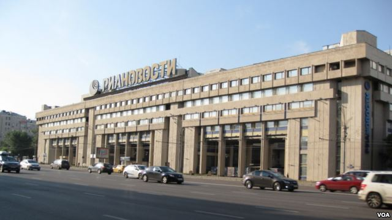

Пропаганда России: «информационная война» без «мягкой силы»
Питер Померанцев (Peter Pomerantsev) – британский журналист и телепродюсер.В ближайшее время из печати выйдет его книга о «постмодернистской диктатуре Владимира Путина» – Nothing Is True and Everything Is Possible (что можно перевести как «Ничто не истина и возможно все»).В интервью Русской службе «Голоса Америки» Померанцев размышляет об уникальных особенностях современной российской пропаганды.
Алекс Григорьев: Какой образ России формируют российские государственные СМИ?
Питер Померанцев: Внутри России формируется образ «осажденной крепости», на которую все нападают, и которую следует защищать, а те люди, которым это не нравится – предатели.Это даже не образ, это скорее эмоциональный жанр; каждодневное существование в условиях паранойи и конспирологии.Но у меня складывается впечатление, что тут идея и образ не особенно важны – важнее культивация чувства «на нас нападают».
А.Г.: А на международной арене?
П.П.: Суть современной российской пропаганды в том, что она не пытается продать кому-то позитивный образ России.Давно поняли, что это никому не нужно и никого не интересует.Они просто валят грязь на другие страны, и делают из Америки мирового изгоя, который виноват во всех бедах человечества.
А.Г.: Вероятно все государства мира в той или иной степени используют пропагандистские инструменты.Но многие отмечают, что современная российская пропаганда все более напоминает пропаганду времен СССР.Так ли это?
П.П.: Я был бы очень осторожен с этими оценками.Конечно, есть известные технологии, которые применяет Дмитрий Киселев – унижение врага, его дегуманизация… Но российский подход очень отличается от пропаганды 20 века.Дело в том, что есть проблемы с самим словом «пропаганда» – оно означает так много вещей, что уже ничего не означает.Но все-таки следует отличать дезинформацию от того, что называется «мягкой силой».
Та пропаганда, которой занимаются в Америке – это «мягкая сила»: это попытка объяснять свою позицию и привлекать людей через свои качества.Россия этим не занимается.Главный философ пропаганды в 20 веке Эдвард Бернейс учил культивировать какой-то свой позитивный образ – но Россия думает о пропаганде в военизированном смысле: она мыслит категориями саботажа, сбивания врага с толку… Это не пропаганда в ее чистом виде, это то, что русские называют «информационной войной».
Ни одна другая страна не занимается информационной войной в таких масштабах.Бывают какие-то отдельные операции, но никто не делает, чтобы это стало системной работой, чтобы в это вливались миллиарды долларов.Это совершенно уникальный пример современной России, в котором слились фасад западного телевидения и индустрии развлечений – с мозгами КГБ.Это породило совершенно новый феномен.
А.Г.: Литературный Франкенштейн восстал против собственного создателя.Существует ли шанс, что описанный вами монстр пропаганды начнет вредить своим создателям?
П.П.: Ну, есть такая теория… Потому что в России сложилась система власти без обратной связи.Там нет демократического процесса, в рамках которого руководству можно говорить правду о том, что происходит.Когда-то российскому руководству были очень важны опросы общественного мнения, которые в России перестали быть научными, правдивыми и используются в целях пропаганды.Плюс они немного пользовались СМИ, чтобы понимать – что происходит в обществе.Но если СМИ все время придумывают и врут, то непонятно откуда можно черпать информацию.
Есть также и риск, что их бред станет нашей проблемой.Что происходит: они придумывают параноидальный мир – неважно, верят они в него или нет.Но большие деньги тратятся на то, чтобы сделать параноидальный мир – настоящим.Может быть, Франкенштейн съест Россию, но до этого он может повредить куче других стран.
А.Г.: Иногда высказывается мнение, что Кремль поверил собственной пропаганде.Вы с этим согласны?
П.П.: Раньше не верил, раньше они совершенно четко понимали разницу между своими манипуляциями и правдой.Это было до недавнего времени – у них было достаточно много инструментов, чтобы понимать достаточно реальную картину происходящего.Я много работал на российском ТВ, встречался с разными людьми, в том числе и с теми, кто крутился вокруг Кремля, и все четко понимали, где начинается спецоперация и где заканчивается правда.
Но сейчас возможно что-то сместилось.И это, конечно, очень пугает.Теперь вся система построена на том, что нет правды, что всё – манипуляции, что американцы тоже это делают и так далее.В какой-то момент, когда нет интеллектуальной точки опоры, начинает все плыть.Но если ты не веришь в то, что правда может существовать – на что ты будешь опираться?Не знаю, хорошо ли я объясняю, но попробуйте понять – они не верят во что-то, они вообще ни во что не верят.А если ты ни во что не веришь, то крыша поедет.Помните героя Андрея Белого в «Петербурге»?– Под конец он просто не в состоянии отличить правду от сна.Это уже последняя точка их нигилизма и цинизма, после которой начинается бред.Это нечто более болезненное, чем просто вера собственной пропаганде.Веру можно как-то вылечить, а здесь лечить нечего, потому что нет идеи правды.
А.Г.: Россия постоянно подчеркивает, что она остается последним островком духовности и традиционных ценностей, в отличии от погрязшего в грехах Запада?Что подразумевается под этими духовными ценностями?
П.П.: Это полный бред, его и опровергать не стоит.Ты же не будешь спорить с уличным сумасшедшим, который несет какую-то туфту, и у которого идет пена изо рта?Эту технологию используют, чтобы привлечь различные группы на Западе, а в России это никто серьезно не воспринимает…
А.Г.: Тем не менее, на Западе есть интеллектуалы, которым это нравится…
П.П.: Да, но в этом нет ничего нового.Как Ленин использовал «полезных идиотов» на Западе, так и современная российская власть.
Вот Зюганов недавно целовался с Патриархом и клялся ему в вечной дружбе.Максимум это можно воспринимать, как бахтинскую сатиру.Какой консерватизм в России?– Это фишка для Запада, чтобы разыграть какие-то карты.А внутри страны это чистый постмодернизм: байкеры, которые любят Сталина и Бога… Это какой-то страшный карнавал гротеска.
Самое интересное в этом плане, что туфту про традиционализм и религию гнали во время Майдана, в условиях, когда реально традиционные и консервативные религиозные силы есть на западе Украины.На Майдане были люди, готовые умереть за национализм и Бога.И очень интересно, что в ту самую секунду, когда Кремль это понял, он тут же выключил этот самый миротип про религию и традиционность, поскольку он, очевидно, не работал в контексте Украины.Это у них кнопка такая, не более того.
А.Г.: На ваш взгляд, все то, что происходит в информационной сфере – это естественно для России или нечто новое?
П.П.: Это великий вопрос, на который я не могу до конца ответить.При коммунизме идея пропаганды была ключевой.Коммунисты считали, что нового идеального человека можно создать – это фундаментально противоречит представлениям Запада, который считает, что человека можно в чем-то убедить, но человек всегда имеет свое уникальное «я», он естественный феномен.В СССР появилась идея, что пропагандой можно изменить мир: это очень советская идея и она осталась.Но для советских людей идея правды была очень важна: с помощью разных интеллектуальных приемов они пытались доказать что их вранье – правда.
А сейчас эта коммунистическая традиция слилась с общемировой тенденцией – все происходит и на философском, и на практическом медийном уровнях: что правды больше не существует, все пиар и реклама.И получилась дьявольская смесь коммунистической одержимости и пропаганды с добавлением всеобщего цайтгайста.Это проявляется в некоторых философских течениях, которые декларируют, что за правду бороться бессмысленно, поскольку кругом одни манипуляции.Вот такая адская смесь русской традиции и мировой тенденции…
А.Г.: Во что все это может вылиться?
П.П.: Я не могу понять – стала ли Россия этаким гоблином, создавшим собственный ад, или Россия – это только начало мирового процесса.Если по пятам России пойдут другие страны, которые будут заниматься такой пропагандой и мелкими войнами, то все выльется во что-то ужасное.Или же, Россия – это такой странный фрик, и весь мир соберется и решит остановить ее – может быть мягко, может быть жестко…
Я еще не понял для себя: Россия это авангард кошмарного 21-го века или все-таки локальная проблема.Очень боюсь, что это первое.
Источник: Голос Америки.
Posted On: 2014-10-14T21:00:00

Content Date: 2014-10-14
Download Date: 2021-07-16
Document ID: L0C04FH83